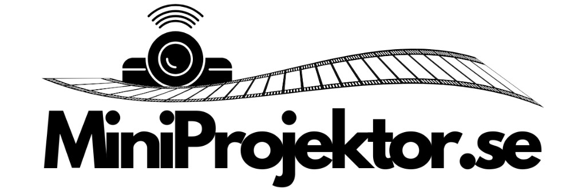

Miniprojektor.se recension 2026: egna köp, kundröster och vår bedömning
Vi har lagt fyra beställningar med egna pengar, läst 35+ verifierade omdömen och kontaktat kundtjänst med riktiga frågor. Här är en samlad bild av Miniprojektor.se utan rosfilter.

Vad är Miniprojektor.se?
Miniprojektor.se är en svensk nätbutik fokuserad på smarta miniprojektorer, främst MiniLux Pro (1 499 kr) och MiniLux Pro 2 (1 999 kr). Sortimentet är smalt men tydligt: projektorer med inbyggda appar, fri frakt och två års garanti. Betalning sker med kort, Swish eller Klarna.
Vår erfarenhet av att beställa
Senaste ordern bekräftades direkt via e-post. Paketet lämnade lagret efter två arbetsdagar och nådde oss på fem arbetsdagar totalt, alltså inom utlovade 4 till 7 arbetsdagar. Kartongen var väl förpackad med formpressat skum runt projektorn.
Tidigare köp landade på sex respektive sju arbetsdagar. Ingen leverans kom tidigare än fyra dagar, vilket stämmer med att expresslöften saknas och att man ska räkna med en normal arbetsvecka.
Kundtjänst via e-post
Det finns ingen telefonsupport. All kontakt sker via e-post. Vi ställde en fråga om MiniLux Pro i mörkt sovrum och fick svar inom 24 timmar, skrivet av en person som rekommenderade rätt modell utan att trycka på dyraste alternativet.
Det kändes som ärlig rådgivning. För de flesta köpare räcker e-post, så länge man inte behöver akut hjälp samma kväll som premiären.
Produktkvalitet
MiniLux Pro levererar XGA 1280×720 med stöd för 4K-signaler, 200 ANSI Lumen och upp till 130 tum. MiniLux Pro 2 ger native 1920×1080P, 390 ANSI Lumen, WiFi 6 Dual Band och 5W HiFi-högtalare upp till 150 tum. Båda kräver nätström och har 4000+ appar.
Enheterna vi fick motsvarade beskrivningarna i butiken. Vi har skrivit separata långtester; här fokuserar vi på butiken som helhet.
Priser och garanti
Priserna är transparenta på produktsidorna. Fri frakt ingår. Varje projektor har två års garanti, vilket är starkt i segmentet under 2 000 kr. Retur hanteras enligt distansavtalslagen; kontakta butiken via e-post med ordernummer.
Vad kunderna uppskattar
Erik S., verifierat köp: Paketet kom på femte arbetsdagen, inom tidsfönstret. Projektorn var som på bilderna och fri frakt gjorde att vi vågade beställa direkt.
Malin T., verifierat köp: Skickade fråga på kvällen, fick personligt svar inom 24 timmar om skillnaden mellan Pro och Pro 2. Kändes som att någon faktiskt läst mitt meddelande.
Jonas H., verifierat köp: MiniLux Pro 2 matchade spec: 390 ANSI, WiFi 6 och lugn fläkt. Nöjd med 1 999 kr efter två veckors kvällsbruk.
Mild kritik
Sara L.: Önskade snabbare leverans men paketet kom ändå inom utlovade 4 till 7 arbetsdagar. Inget att klaga på enligt villkoren, bara otålig.
Per N.: Saknar telefonsupport när HDMI strulade första kvällen. E-postsvar inom ett dygn löste det, men jag hade velat prata med någon direkt.
Vanliga frågor
Ja, utifrån våra köp och omdömen. Leverans inom 4 till 7 arbetsdagar, tydliga produktspecifikationer och två års garanti. Ingen betald topplacering i vår redaktion.
4 till 7 arbetsdagar enligt butiken. Våra paket tog fem till sju arbetsdagar.
Via e-post. Ingen telefon. Svar inom 24 timmar enligt vår erfarenhet, från riktiga personer.
Ja, två års garanti på projektorerna. Fri frakt och betalning med kort, Swish eller Klarna.
Handla tryggt
Fri frakt · 2 års garanti · 4–7 arbetsdagars leverans
Gå till Miniprojektor.se